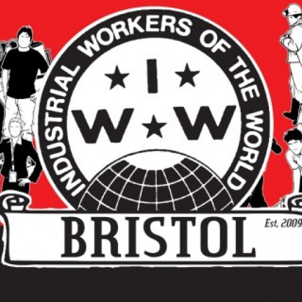

Submitted on Mon, 11/30/2015 - 9:15pm
By the Bristol IWW - Bristol IWW, November 30, 2015
1. You’re having problems at your workplace. You may not be getting your correct pay, or your correct sickness pay, or holiday entitlement, but you are unsure what to do because you haven’t got anything written, or you do but it doesn’t make any sense to you and nobody has bothered to explain it to you.
You want to do something about it, but you don’t really know what your rights are and what the law says. You may be bullied, harassed or intimidated by colleagues and/or managers, and feel isolated and depressed. Or, perhaps, you may actually like your job, get on with your colleagues and not have any problems at all with it. You may be unemployed, or a student or a retired person. You may think you have nothing in common with people in different circumstances, but we think you do: we think you should all join the IWW. In the IWW we believe that whether you are in work or not right now, you are still part of a society based on paid work and as such you will be affected by it at some point or other.
In the IWW we believe you don’t join the union only when you have a problem that you need an “expert” to fix; we think you should join anyway because being in a grassroots union is a key element of being involved and engaged with the world you live in. We think everyone has the right to take control and power back over their lives and work. We think everyone has the right to learn about employment rights and legislation and become their own “expert”. We become “experts” through formal training courses in casework and organising, but mostly we learn informally, by sharing knowledge and skills and supporting each other. We are grassroots, we are democratic, and we are fighters.
2. You are a member now, and suddenly you do have problems in your workplace. Your manager may have decided to change your terms and conditions and demanded you to accept. You may notice you are not getting paid all the hours you are working. You may be under a lot of stress and pressure at work and have to take time off work sick because of it. Who you gonna call? The Wobblies! You arrange to meet with one of our caseworkers and go through things with them. You finally have someone to talk to who will listen to you and give you guidance and support, help you understand the law and what to do.
In the IWW we believe in EMPOWERMENT not delegation: we don’t do things FOR you, we do things WITH you. Once you have a clearer idea of the options available to you, it is up to you to decide what steps to take, knowing that the IWW will have your back. The IWW can help you in many different ways, from standard workplace procedures such as grievances and disciplinaries to more complex casework such as supporting you to take your case to an Employment Tribunal if appropriate. All these words and expression may mean nothing to you at the beginning, and you may feel overwhelmed by it all, but slowly, with the help of your IWW rep, you will become your own “expert”. You will start to understand, learn and feel empowered: knowledge is power.
3. So, your case is ongoing and we are following the standard procedures. We may be supporting to write formal demands to your employer, attending meetings alongside you, helping you to find a good solicitor, advocating on your behalf with your employer or other organisations (such as ACAS).
Sometimes though things don’t work, maybe because your employer is not responding, or because the nature of your employment is such that standard procedures are not appropriate. So, what happens then? Simple: we use direct action. We get together, because together we are stronger, and we get your case “out there”. We may ask people to call or write to your employer and complain about they way they are treating you. We may ask for a boycott of the company you are working for. We may get in touch with local and national press to publicise your case. We may hold a demonstration at your workplace until your employer meets your demands.
This is what we have done recently for one of our members who had her wages withheld by the cafe she worked at. And just in case you are wondering, yes, it did work: direct action does get the goods! Read our report about it “What’s outrageous? Unpaid wages!”.
4. All is over now, your employer has seen sense and you are in the pub celebrating with the Wobblies and your friends. You will feel knackered. You will also feel thrilled, energised, inspired. You will look at yourself in the mirror and know you have had the guts to stand up for your rights, no matter how stressful it has been. You have learned that you are not alone, and you will never feel alone again when standing up to your boss because the IWW will always have your back. So, what next? Well, if you haven’t already done so, you could complete our training courses in casework and organising. You will now have the knowledge and skills to support people in the same situation, and you will have a personal understanding of how it feels to have a dispute with your employer and WIN. The sky is our only limit, for us Wobblies!
 Now more than ever we need organising that is:
Now more than ever we need organising that is: Fellow Wobblies and supporters, Bristol Communications Officer here to report on the wet but very successful solidarity demo held this morning in Bristol outside Cafe Amore!
Fellow Wobblies and supporters, Bristol Communications Officer here to report on the wet but very successful solidarity demo held this morning in Bristol outside Cafe Amore! In recent years, new or rediscovered forms of worker self-organisation have begun to appear – and often in the most unlikely of places.
In recent years, new or rediscovered forms of worker self-organisation have begun to appear – and often in the most unlikely of places. Liverpool Industrial Workers of the World unreservedly welcomes the sensational decision of Liverpool City Council to scrap their consultation on plans to fine the homeless a whole eight days ahead of its planned conclusion. We are delighted that homeless people now no longer face this added threat of being penalised for the social crime of homelessness.
Liverpool Industrial Workers of the World unreservedly welcomes the sensational decision of Liverpool City Council to scrap their consultation on plans to fine the homeless a whole eight days ahead of its planned conclusion. We are delighted that homeless people now no longer face this added threat of being penalised for the social crime of homelessness.{kind=link}